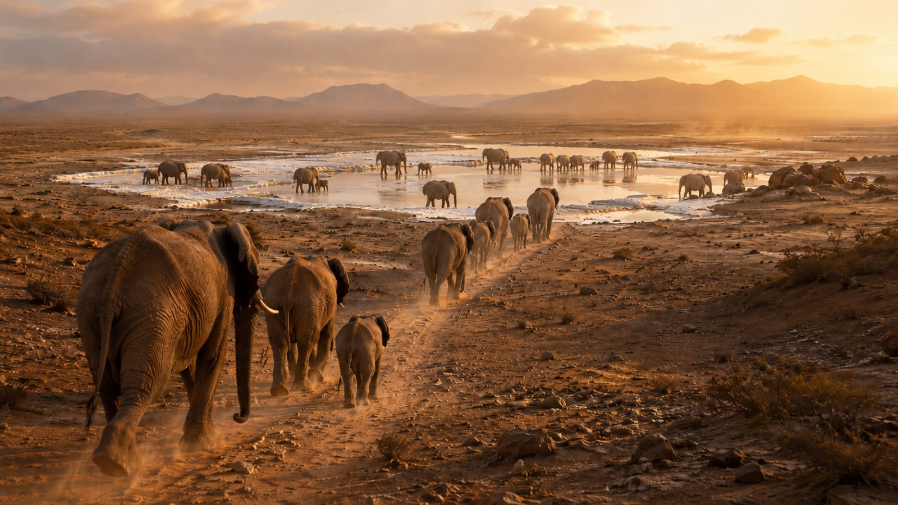

Gli Elefanti e il richiamo del sale.

C’è un momento, nella vita degli animali selvatici, in cui l’istinto diventa una bussola infallibile. È il momento in cui il corpo chiede ciò che gli manca. E, molto spesso, ciò che gli manca è il sale. Tra gli esempi più affascinanti ci sono gli elefanti. Da tempo naturalisti, esploratori e studiosi osservano un loro comportamento sorprendente. In determinati periodi dell’anno, gruppi di elefanti - talvolta piccoli, altre volte numerosi - percorrono lunghe distanze per raggiungere pozze salate, sorgenti salmastre, laghi e terreni ricchi di sale. Vanno, in un certo senso, a fare il pieno di sodio e di tutti gli oligoelementi essenziali. Ma perché gli elefanti cercano il sale? La risposta è semplice. Per una necessità fisiologica. La loro dieta è composta soprattutto da erbe, foglie, cortecce, radici e frutti. Un’alimentazione abbondante, certamente, ma non sufficiente a fornire tutti gli elementi minerali di cui un animale di quelle dimensioni ha bisogno. Il sodio, in particolare, può essere scarso negli ambienti interni lontani dal mare e in molte regioni tropicali, dove le piogge intense contribuiscono a sciogliere i sali presenti nel terreno. Ecco allora entrare in scena le cosiddette salt licks - letteralmente leccatoi salini - luoghi naturali nei quali l’acqua, il terreno o la roccia presentano una particolare concentrazione di sale che serve loro per integrare il proprio fabbisogno di sodio, ma anche di calcio, magnesio, potassio e altri elementi fondamentali per l’equilibrio dell’organismo, la funzione muscolare, la trasmissione nervosa e l’idratazione. Una necessità tutt’altro che trascurabile considerata la struttura imponente, che negli esemplari più grandi può superare le sei tonnellate. Ma la domanda più affascinante è un’altra. Come fanno gli elefanti a sapere dove andare e cosa cercare? E poi chi dà il via alla partenza? Come fanno a riconoscere il momento giusto? E come riescono a ritrovare luoghi spesso remoti, dopo aver percorso distanze considerevoli? La risposta, almeno in parte, si trova nell’incontro tra memoria e esperienza che indirizzano la loro bussola. C’è da dire che gli elefanti sono animali dotati di una memoria straordinaria. Sono le femmine adulte, e soprattutto le matriarche, a guidare il branco e custodire una sorta di mappa visiva del territorio. Percorsi, fonti d’acqua, luoghi sicuri e aree di pascolo. A questa memoria collettiva si aggiungono un olfatto finissimo e una sensibilità eccezionale ai segnali dell’ambiente. È quindi il bisogno fisiologico, unito all’esperienza delle femmine più anziane, a mettere il branco in cammino. Il fenomeno viene osservato costantemente in diverse aree dell’Africa e dell’Asia. Uno dei casi più incredibili riguarda gli elefanti africani che raggiungono radure e pozze minerali letteralmente nascoste all’interno delle foreste, specialmente nell’Africa centrale. Qui gli elefanti si radunano per bere acqua ricca di Sali minerali ma anche, talune volte, per ingerire terra, argilla e fango salato, rimasti sul fondo di pozze ormai prosciugate. In altre zone si dirigono verso terreni umidi, rive lacustri, sorgenti minerali o banchi di argilla. Tutti luoghi nei quali la natura ha concentrato quella sostanza preziosa che è il sale. Celebri sono anche gli elefanti delle grotte del Monte Elgon, al confine tra Kenya e Uganda. In questo caso il loro comportamento appare ancora più sorprendente. Infatti penetrano all’interno di caverne e, servendosi delle zanne, raschiano dalle pareti frammenti di roccia e sedimenti ricchi di sali minerali. Li fanno cadere a terra, li frantumano con le zampe e infine li ingeriscono. È una scena potente se ci pensate, quasi arcaica, capace di raccontare meglio di molte parole quanto il sale rappresenti una necessità primaria per gli esseri viventi del nostro pianeta. Gli elefanti sono certamente i giganti straordinari di questa storia, ma c’è da dire, per completezza di informazione, che non sono gli unici animali a cercare il sale. Cervi, alci, caprioli frequentano regolarmente sorgenti minerali, terreni salini e zone umide. I gorilla e altri primati sono soliti ingerire argille o vegetali ricchi di minerali. I pappagalli dell’Amazzonia si radunano sulle grandi pareti argillose, mentre alcune farfalle si posano sul terreno umido, sul fango e persino sul dorso degli animali per assorbire il sodio dal loro sudore. Pertanto c’è una verità semplice e, allo stesso tempo, bellissima. Il sale è la sostanza chiave della vita. Una forza a volte invisibile, attraverso la quale la natura ci ricorda che il sale è indispensabile all’equilibrio degli organismi viventi. La prova, se mai ce ne fosse ancora bisogno, sono proprio gli animali che pur non leggendo manuali e non consultando nutrizionisti, sanno perfettamente dove andare, cosa cercare e quando mettersi in cammino per trovarlo. È forse questa la lezione più importante che ci trasmettono. Quando manca il sale, la natura si mette in viaggio. Proprio come fanno gli elefanti, che attraversano foreste, savane e territori immensi per trovare ciò che serve loro per vivere, mantenere il proprio equilibrio e… continuare il viaggio. In fondo, il sale fa questo da sempre. Unisce istinto e sopravvivenza, corpo e territorio, bisogno e memoria. È tutto ciò che studio da anni e che ancora straordinariamente mi affascina e mi emoziona in modo totale. Umilmente e con grande passione, non posso che ripagare questo privilegio cercando di divulgare ovunque mi sia data la possibilità di farlo…la grande forza del sale. Buon sale a tutti! The Salt Man